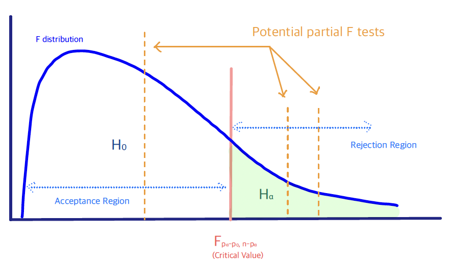

2.7 Hypothesis Testing in MLR
When fitting a regression model, we often want to understand which predictors are statistically significant, or which of two models (a larger one or a smaller one) is more appropriate –either for prediction or for estimation.
Testing for the statistical significance of one or more predictors can be formulated either as a test that the corresponding coefficient(s) equal zero, or as a model-comparison test. In this course we summarize all such testing questions with the following hypothesis test:
\[ \begin{cases} & H_0: \text{ Reduced Model with } p_0 \text{ coefficients}\\ & H_{\alpha}: \text{ Full (larger) Model with } p_{\alpha} \text{ coefficients}\\ \end{cases} \] Obviously, \(p_{\alpha} > p_0\), since the reduced model is a special case of the full model. Consequently we expect the reduced model to have a larger residual sum of squares: \(RSS_0 \geq RSS_{\alpha}\). The main tool for this comparison is the partial \(F\) test:
Partial \(F\) test
Hypothesis Test: \[ \begin{cases} & H_0: \text{ Reduced Model with } p_0 \text{ coefficients}\\ & H_{\alpha}: \text{ Full/ Larger Model with } p_{\alpha} \text{ coefficients}\\ \end{cases} \]
Test Statistic: \[F=\frac{\bigl(RSS_0 - RSS_{\alpha}\bigr)/(p_{\alpha} - p_0)}{RSS_{\alpha}/ \bigl(n-p_{\alpha} \bigr)}\, \sim \, F_{p_{\alpha} - p_0, n-p_{\alpha}}\]
Decision Rule: Reject \(H_0\), if the \(F\) test statistic is large (or larger than \(F_{p_{\alpha} - p_0, n-p_{\alpha}}\)), i.e. the variation missed by the reduced model, when being compared with the error variance, is significantly large.

The numerator in the partial \(F\) test measures the extra variation in the data not explained by the reduced model, but explained by the full model.
The denomimator is the variation in the data not explained by the full model (i.e., not explained by either model), which is used to estimate the error variance.
Birthweight Example (cont’d)
We wish to test whether the group of predictors that describe the father’s characteristics (i.e. variables \(X_9\) – \(X_{12}\)) is jointly significant. The hypotheses are
\[\begin{cases}
&H_0: Y \sim 1+ \beta_{1} X_{1} + \ldots + \beta_{8}X_{8} \\
& H_{\alpha}: Y \sim 1+ \beta_1 X_1 + \ldots + \beta_{8}X_{8}+ \ldots + \beta_{12} X_{12}
\end{cases}
\]
Here \(p_0 = 8+1\) (8 predictors plus intercept) and \(p_{\alpha}=12+1\) is the number of \(\beta\)’s in the full model. Extracting \(RSS_0\) and \(RSS_{\alpha}\) in R/Python and computing the partial \(F\) test statistic yields \(F = 0.7225\). Because this value is smaller than the critical value $ F_{4,, n-13} $ we do not reject \(H_0\) and prefer the reduced model.
Partial \(F\) Test: Special Cases
- Test for a Single Predictor \(\beta_j\)
\[\begin{cases} & H_0: Y \sim 1+ \beta_1 X_1 + \ldots + \beta_{j-1}X_{j-1} + \qquad \quad \; \beta_{j+1} X_{j+1} + \ldots + \beta_p X_p \\ & H_{\alpha}: Y \sim 1+ \beta_1 X_1 + \ldots + \beta_{j-1}X_{j-1} + \beta_{j} X_{j} + \beta_{j+1} X_{j+1} + \ldots + \beta_p X_p \\ \end{cases} \] The partial \(F\) test for a single coefficient \(\beta_j\) is exactly equivalent to the usual \(t\)-test$ \[t_j = \frac{\hat{\beta}_j}{\widehat{\operatorname{se}}(\hat{\beta}_j)} \sim t_{n-p-1}\] under \(H_0: \beta_j = 0\). In practice most software reports the \(t\)-statistic and its \(p\)-value directly.
- Test for all Predictors
\[\begin{cases} &H_0: Y \sim 1 \qquad \text{[intercept-only model]} \\ & H_{\alpha}: Y \sim 1+ \beta_1 X_1 + \ldots + \beta_{j-1}X_{j-1} + \beta_{j} X_{j} + \beta_{j+1} X_{j+1} + \ldots + \beta_p X_p \\ \end{cases} \] This is the overall \(F\) test, which can be viewed as a goodness-of-fit test for the regression model.